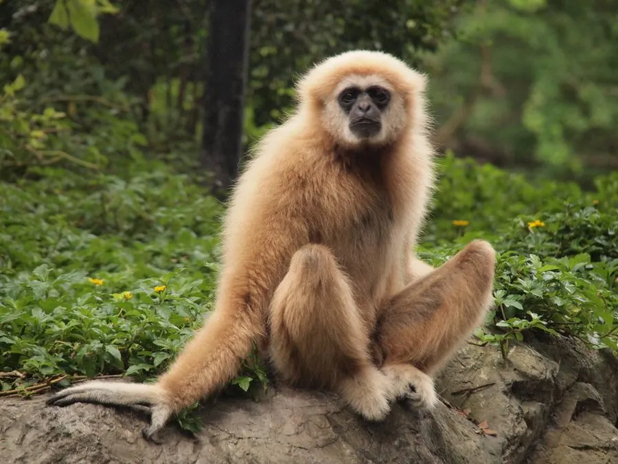

哺乳动物 · 动物界
白掌长臂猿 Hylobates lar

手掌与脚掌呈白色的长臂猿，毛色有黑有浅褐，清晨以二重唱宣示领域，分布于中南半岛至苏门答腊，中国云南边缘曾有分布。
- 分类
- 门脊索动物门纲哺乳纲目灵长目科长臂猿科属长臂猿属
- 栖息环境
- 热带常绿雨林与季雨林的中上层树冠
- 地理分布
- 缅甸、泰国、老挝、柬埔寨、马来西亚与印度尼西亚苏门答腊；中国云南南部曾有记录
- 保护级别
- IUCN 极危（CR）；中国国家一级保护动物；CITES 附录Ⅰ
物种志
白掌长臂猿体形纤细，臂展远大于身高，成年体重约 5–7 千克，体长约 45–50 厘米。最显著的特征是手、脚呈白色，像戴着白手套白袜子，面部裸皮亦为白色并围一圈白毛，而身体毛色可为纯黑、深褐或浅黄褐色，同一地区常有两种色型共存。它们没有尾巴，肩关节活动范围极大，可在树冠间以双臂交替摆荡高速移动。
它们栖息于热带常绿雨林与季雨林，活动高度多在 20 米以上，以果实、嫩叶、花和昆虫为食，偶而捕食鸟卵。每群由一雌一雄及未成年后代组成，配偶关系相对稳定，清晨雌雄会发出配合默契的二重唱，声音可传数公里，用于宣示领域并加强配偶联系。孕期约 7 个月，每胎一仔，幼猿约 6–7 岁性成熟。森林砍伐、宠物贸易与猎捕使其分布区不断碎片化。
形态与习性
- 体长约 45–50 cm，无尾，臂展可达 1.4 m
- 体重约 5–7 kg
- 食性果实、嫩叶、花、昆虫，偶食鸟卵
- 繁殖孕期约 7 个月，每胎一仔，约 6–7 岁性成熟
- 寿命野外约 25 年，饲养下可超过 40 年
- 领域宣示清晨雌雄二重唱，声音可传出 2–3 km
- 种群现状全球数量持续下降，中国境内已多年无确证记录
趣味知识
- 它的手掌和脚掌都是白色的，像戴着一副白手套和白袜子。
- 白掌长臂猿的叫声是一雌一雄相互接续的二重唱，配合极为精准。
- 摆荡前进时它能一次跨越十余米，速度可达每小时 50 千米。